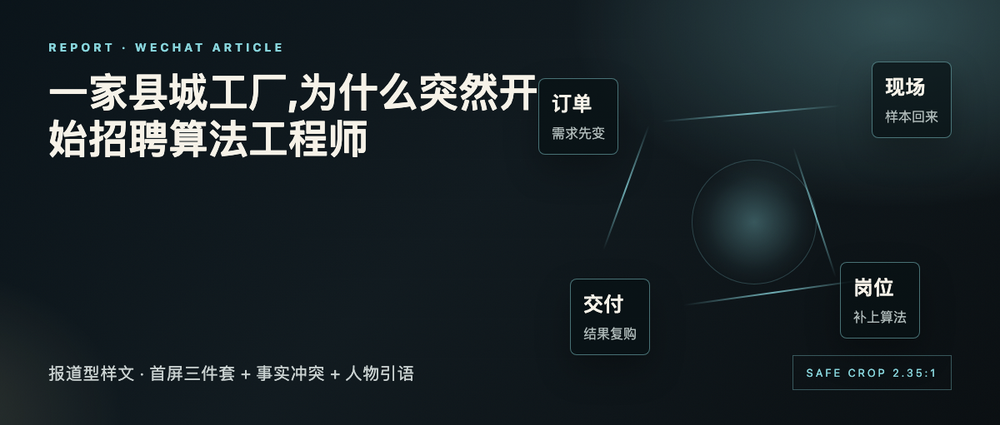
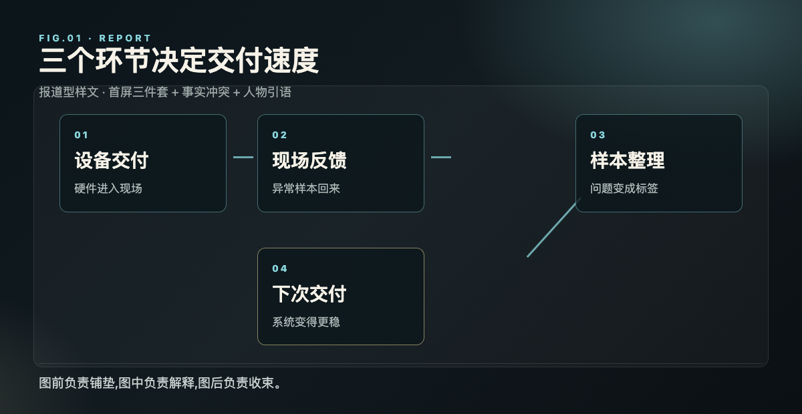

一家县城工厂,为什么突然开始招聘算法工程师
报道型样文 · 首屏三件套 + 事实冲突 + 人物引语

样文 · 县城工厂的技术岗位
六月的最后一周,这家做传感器的小工厂多挂了三个岗位:算法工程师、数据标注主管、现场应用工程师。
它没有宣布转型,也没有开发布会。变化先出现在招聘页上。
01
订单变了,岗位先变
过去,客户只问交期和价格。现在,客户会把一段产线视频发来,问系统能不能提前识别异常。
这类需求让工厂的报价方式发生变化。硬件仍然是入口,服务开始决定复购。

FIG 01 · 从硬件交付到现场反馈
图里的变化不复杂:设备卖出去之后,数据还会继续回来。真正拉开差距的,是团队能不能把这些反馈变成下一次交付的改进。
02
小团队的优势在现场
大公司有平台,小团队有现场。工程师白天在产线调参数,晚上把误报样本整理成下一轮训练集。
“客户不关心模型名字,只关心凌晨两点会不会误停线。”
—— 样文代拟引语,发布前需确认
这也是县城工厂招聘算法工程师的原因。现场问题要被带回系统里,下一次交付才会变得更稳。
关于样文:本文为排版测试内容,用于验证报道型公众号文章的字号、段距、配图和手机阅读节奏。